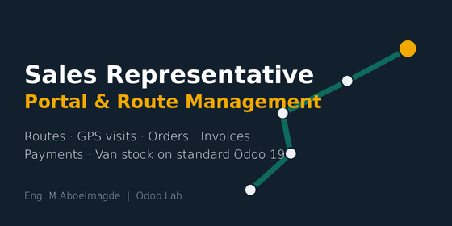
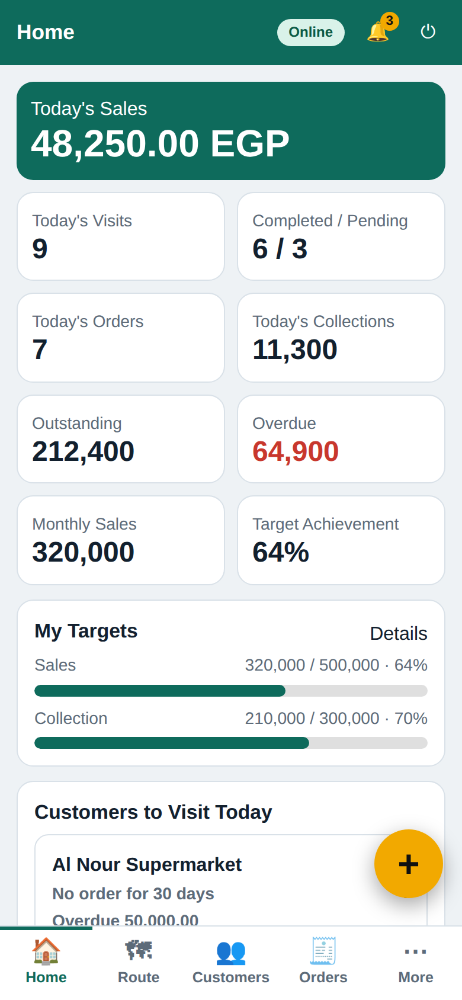
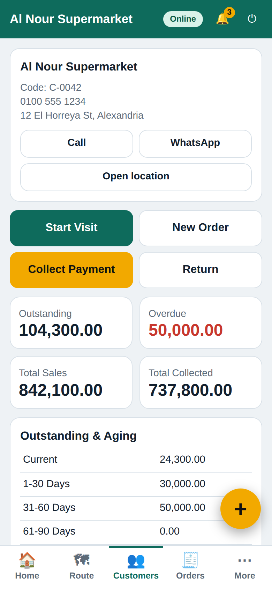
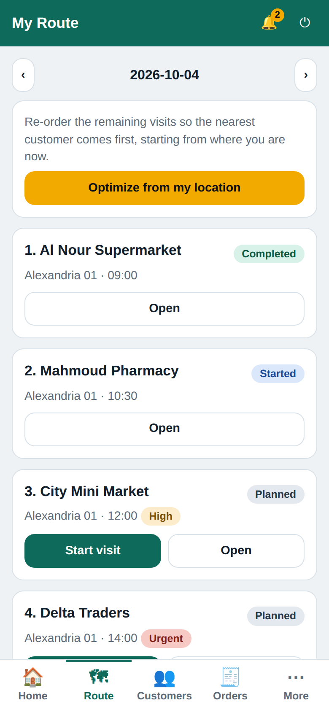
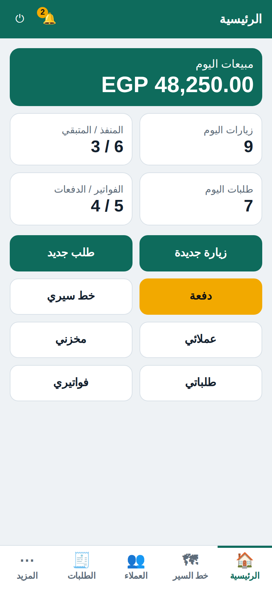

Sales Representative Portal & Route Management
A mobile-first portal for field sales reps. Every action lands on standard Odoo documents — no parallel sales, accounting or stock system.

Screens
Mobile-first, Arabic (RTL) and English (sample data).








Field sales management in one portal
- Customer 360 with aging, products bought before and one-tap payment collection.
- New customers from the phone with optional manager approval; targets, ranking and smart visit suggestions.
- Expenses with approval, cheque tracking, printable payment receipts and advanced returns limited to delivered quantities.
- Recurring routes (daily, weekly, every 2 weeks, monthly, custom), follow-ups and a faster visit screen.
- Offline queue: visits, notes, follow-ups, expenses, new customers and quotations sync automatically when the signal returns.
What the rep gets
- Home with today's visits, orders, invoices, payments and sales, plus big one-tap actions.
- My Customers limited to assigned customers: call, WhatsApp, open in Google Maps, save the customer's location, full history.
- My Route by day, date, route, area and priority, with Planned / Started / Completed / Cancelled / Missed statuses.
- Visits with GPS: location and time are captured when a visit starts and ends (no background tracking unless you enable it), with result, notes, next visit date and attachments.
- Sales orders (quotation or confirmed) with discount cap and price-change control, created as real
sale.order records.
- Invoices from confirmed orders (or directly, if allowed), PDF download, residual tracking.
- Payments registered through Odoo's own payment wizard, by the methods assigned to each rep. Collections summary by cash / bank / cheque.
- Van stock: rep warehouse view, receive, return, internal transfer and delivery follow-up on real
stock.picking.
- Notifications for confirmed or cancelled orders, issued invoices, payments, new visits and route changes (optional email copy).
- Route optimizer: re-order the day's visits nearest-first from the rep's current location (managers can optimize a route from the backend).
- Installable & offline reading: add to home screen; previously opened pages stay readable without a connection.
- Order editing before confirmation and Arabic RTL interface.
- Pick products from a dropdown or type to search; stock operations can be validated automatically for reps who are granted the permission.
What management gets
- Management dashboard: sales today / week / month, visits completed vs missed, visit-to-order conversion, average visit duration, average order value, collection / sales ratio, daily trend, top customers, fully clickable down to the underlying orders, visits and payments, and dark-theme ready.
- Backend menu: Sales Representatives, Routes, Visits, Customers, Sales Orders, Invoices, Payments, Stock Operations, Settings.
- Audit trail on every document: created from Portal, sales representative, visit.
Security by design
- Reps are Portal users with no backend access, enforced by access rights and record rules, not by hiding buttons.
- Permissions per representative: every right can follow the global default or be overridden for one rep only.
- Reps only see their own customers, visits, orders, invoices, payments and transfers.
- Server-side checks on prices, discounts, payment methods, warehouse and ownership of every record.
Settings
GPS, optional visit tracking, attachments, WhatsApp, customer location, quotation / order permissions, maximum discount, price change, invoice and payment permissions, stock permissions, main warehouse.
Compatibility
Odoo 19, multi-company aware. Optional bridge module adds an Employee link when HR is installed. Depends on Sales, Inventory, Accounting and Portal. Works on Android, iPhone, tablet and desktop browsers with no separate app.
Author: Eng. M.Aboelmagde · Odoo Lab (YouTube @odoolab)